来源：https://j2az1iavo9.feishu.cn/docx/VrDIdgwTKoTkmsxlpgKcrZ3enzf
hello，生财有术的圈友们，你们好，见贴欢喜~
我是小熊，思维导图IP陪跑教练，做过3次资料整理航海教练，做了2次思维导图航海教练。很多生财的圈友见证我这个职场宝妈从零开始打造思维导图IP，目前变现利润60W+，在23年12月单月收入突破新高10W+，对我来说是人生的一个大突破。
因为生财，我从一个一无所有焦虑迷茫的职场宝妈，熬出了自己的产品，还一次次被官方伙伴看见，邀请我去参与很多活动，因为这些看见激励我一次次挑战自己，有时候我也不知道怎么才能变得更好，但是我想：“干就完了，干着干着就会有方向！”于是，我干着干着，一路看见很多星光。
关注思维导图这个赛道的小伙伴或许看到过我发的第一篇精华帖，《三次副业失败探索，最终通过做思维导图训练营成功变现 4W+的经历分享》https://t.zsxq.com/0bbNz08uJ 我记得我在文章最末尾写了我接下来的规划：出高客单产品、做好小红书、培养合适的运营团队、链接资源接商单，没想到这些规划我一一实现了，所以有了月入10W+的好成绩。所以接下来我就给大家复盘下如何实现月入1W到月入10W+的跃迁的。
今天的复盘会从以下4个方面进行：
1.打造有温度的IP ，搭建靠谱团队
2.运营小红书矩阵，稳定的流量渠道
3.推出高客单产品，做到12.8%的转化
4.产出有逻辑的导图，链接书籍或B端大佬
这4个方面是我打造IP路上一直在贯彻的动作，可能会对部分有技能要打造IP或者刚IP起步要进阶发力的圈友有启发，那么我们一起上路，追逐星辰大海去。
做知识付费的尽头是打造IP，目前咱们能了解到的任何一个赛道和技能都不是只有一个人会做，对于付费用户来说选谁就说明她更认可谁，更喜欢谁。那么打造IP就显得尤为重要，我算是比较早就开始意识到打造IP的重要性的，积累了2年多，到今天也算是收获了一批大大小小1000个付费粉丝了，这是好事。
但是随着学员的增加，事情会越来越多，一个人单打独斗真的越来越累，我点评作业到深夜，连续一周脖子不能低头，一低头就酸痛，一周的调整休息才缓过来。我知道身体在给我发出信号了，但是我还是很蛮想赚钱的，这是真心话，她能帮我发挥在职场上没发挥出来的价值，于是我继续熬着。晚上大把的时间铺在训练营，孩子只能在我边上用平板学习，芷蓝姐说“当你在一个模式赚钱累的时候，应该反思这个模式的问题。”我感觉那一刻戳到了我，但是我还是没能踏出这一步。
直到去年开始当航海教练，航海之前会有工作人员和我沟通挖掘问题、写手册过程有人和我探讨思路，写完手册还有人校稿，高手分享或者直播都会有不同的人来对接细节，细节到什么程度，细节到应该保持在一个什么样的分享频率都会给我规定好，我真的被生财整个航海流程细节征服了。
所以，我找到答案——我必须搭建团队。这么简单的答案我却探寻了很久，因为我做梦也没想到我就一个普通职场宝妈，在公司也是普通的岗位，却因为副业要搭建团队。
果然，自从搭建团队，我看见月收入从2万、3万、4万、5万......11万逐渐跃迁。现在的我，大多数时间用在重点内容的输出，每个板块的重点事情决策，其他细节都会有我的助教、助理们帮我完成，我还实现了每天下班2小时在家辅导孩子陪娃的快乐生活。
那么，接下来，我就给大家分享我打造有温度的IP、搭建团队的一些心得。
打造有温度的IP，让粉丝看到你是一个鲜活，能提供情绪，能提供价值的IP。具体如何呈现我们可以依据自己的性格展开，去年5月我参加了优势航海，测试了自己的盖洛普，人都有缺点，那就先好好用自己的优势吧。
我的盖洛普是影响力和关系靠前的，所以我做关系处理上的事情会比较擅长，能够站在对方的角度去共情，能够给学员解答思维导图的困惑、自媒体的迷茫，甚至是职业或者生活中的一些决策建议。那我的温度从哪些温度体现呢：
因为我的主业是在设计公司，所以对于品牌调性这一点我会有一些自己的见解，在刚开始出课程没多久我就开始给我的产品以及个人IP设定一个视觉基础印象，这个最基本也不用花钱的，就从配色着手。
我整个思维导图系列的产品、海报、头像以及训练营期间的所有物料都是蓝黄色调。蓝色代表冷静、理智，而黄色代表的是希望、活力、乐观，特别符合我这个E人，热情的性格做着思维导图强调逻辑理智的赛道，所以整个品牌色就是在沉稳中绽放的活力。
同时，学员还帮我设计了一套表情包，就有一句话“加入小熊，做温暖的人”，一点点强化这个IP的调性，每当有新人入群就会开始排队刷表情包。
这是我在视觉上为IP营造的温度，海报、课程大纲、训练营物料、头像、表情包等各种宣传物料都是统一的视觉符号，就像咱们生财绿一样，看到这个特定的绿色就会想到生财。
打造IP最重要的还是交付，在交付的过程用户得到了超预期的收获及其他价值，用户会对IP越来越认可，那我交付主要在训练营、陪伴群、私信、及朋友圈中体现。
关于训练营中的详细交付，我在前面的那篇精华贴中详细展开介绍了，现在进行了一些改良，助教和我一起交付训练营，有了助教团队，我们的答疑更加及时，服务的颗粒度会更细致。
同时，我非常用心的一点，训练营结束我们会评选“全能手”“进步最佳”“全勤王”这样的获奖称号，每位获奖的小伙伴，我会结合她的个人情况进行礼物的挑选。
比如，职场宝妈学员，我会挑选一些孩子健康的零食、办公日常护眼的东西吗，疗愈类的书籍，比如男性学员，我会挑选一些商务的泡茶套装或者个人思维提升类的书籍，甚至帮助一些宝妈学员激励孩子，送一些小礼物给他们的孩子，让孩子们看到妈妈很优秀，也让孩子感受到被关注的激动。
本身收到礼物就是一件很开心快乐的事情，但是收到量身定制的礼物是不是觉得是被用心对待呢，我的学员们都是跟我说，好贴心的礼物，很感动。礼物就是情谊的展现。
从2023年夏天，我就小规模在学员中筛选一批对自媒体、副业变现感兴趣的伙伴，进行小规模的分享，在每天的分享中我会分享做生财上的一些成功案例，分享我工作、生活中遇到的困境我如何应对、在做自媒体遇见各种各样情况处理方法。
通过这些细碎的事情，让大家看到我不仅仅是一个只会分享价值干货的工具人，我也会emo、我也会焦虑、我也会被人黑，遇到这些事我的处理方法其实更重要，在这里才是展现你IP温度的地方。
我记得我分享在群里被人黑被人质疑的时候，我会站在对方的角度思考，或许对方没有做成事情，他没办法感受到这个过程，所以会质疑，或许我下次写帖子要更加细致，让新手也能深刻的感受到其中的做法。当时群里好多小伙伴给我鼓励和支持，让我继续加油，还会支持我。
芷蓝和我分享过——私域流量成交 5 步法（AITDA) ，其中的“Trust”即信任，是我们做朋友圈营销的基础，没有信任就不会有下一步的欲望刺激和成交，那怎么才能通过朋友圈建立你和用户之间的信任感呢？
除了分享干货价值、赚钱的经历、生活，我还会分享一些“微隐私”来巩固信任，毕竟都是线上的好友，没有真实的见过面，所以这一招既可以巩固信任又能拉进用户距离，你和用户之间也更透明了。
比如，我上周就发了一条圈，关于一位小红书来的宝妈很想学习我的课程，她说没有钱要等下个月发工资了才有钱来报名，我给了她一些条件的支撑，依旧是解决不了这个问题，我就直接拒绝她了，让她先把生活过好，再来顾及学习中的诗和远方。朋友圈底下就有人给我点赞，说我处理的很好。
比如，再有一次，有想白嫖的人加到我说“长得这么好看怎么张嘴就提钱”，靠谱教我反杀回去“长得这么帅，怎么上来就白嫖”，然后反手一个删除，畅快淋漓，又长脑子情绪又得到发泄。
类似这样的事情，我都会晒到朋友圈去，因为我们每个人都有窥探他人隐私的欲望，正好可以满足朋友圈粉丝的需求，又能辅助你获得用户信任。
我有很多信任我的学员，遇到生活中或者工作中的困扰，两难抉择会跟我私信，想听听我的建议。因为我算是一个生活经历比较丰富的人，从生完孩子到现在大5年整整的时间，我经历过低谷，经历过缺钱，经历过尝试副业从0开始尝试项目，
大多数小伙伴来咨询的问题，我都经历过，所以我会站在我经历的角度也结合他们的情况给予一些建议或者是情绪价值，安抚焦虑的情绪或者鼓励不敢迈出的人。
这个要花时间去做，所以我会选择在睡前帮学员解决一些情绪的上的卡点，慢慢的被治愈、感染，大多数这样的伙伴会选择升级到私教或者我的万元合伙人产品。
随着我开训练营的期数增加，优秀学员的质量也越来越多，我会刻意观察也会认真看学员们作业中的计划和复盘，找到有潜力的伙伴，私下给予指导，并邀请她成为我团队中的一员，帮我做一些事情，每一位帮我做事的学员我都会在月底发工资。
一期训练营要带100号人，确实也需要运营团队支撑才能更好的服务，所以主动挖掘优秀的学员帮助我把一些琐碎的事情做好，我有更多的经历做内容的输出和战略的布局。
而且这个挖掘还会带来附加效益，有些伙伴跟我一起做事，慢慢领悟到做自媒体的好处，也赚到一些零花钱，就要加入私教和我一起赚钱。
航海第一次直播的时候，很多操作我不太清楚，航海运营的小伙伴针对我的任何一个问题都有一套SOP，通过SOP我不仅可以快速知道怎么做，还能知道关联的123，链接一发，双方都清爽。
跟着生财学团队管理，我明白SOP尤为重要，我现在养成了每指导一个学员帮我做事情，我就会沉淀或者完善SOP。训练营有运营SOP、做商单有商单SOP、排版公众号有SOP、做小红书矩阵号有SOP等等。
当我教会了一个人，我就会让她写一套完善的流程，再有人要加入，那就让第一个人去教第二个人，慢慢的掌握的人越多，我就鼓励大家创新，沉淀新的内容。
前面我提到，我会挖掘有潜力的学员，给予一些指导，并邀请她加入我的运营团队。现在我这个小IP也有十几个深度信任的学员组成的团队，他们每个人都有自己主要工作内容，而且增加的这些工作不会因此影响他们的主业工作，我还会在每个月底准时给大家发工资。
训练营的助教、陪伴群的运营官、小红书素材的素材官、还有我商单对接的主力团队，目前这十几位伙伴都是特别为我考虑，新年的那个月没什么活儿，我给助理发工资，她们会站在我的角度为我考虑，说发太多了我的钱也不是大风刮来的。
我想这是一场双向的信任，我的IP吸引他们，他们做事我100%信任。
自媒体创业，打造IP不是真的要一个人活成一家公司，如果真是这样，那时间永远要处理琐碎的事情，战略上的事情没空弄，内容输出没时间，永远都是在低效的努力。
所以对于搭建轻创团队，给学员们赚点钱，这事儿我觉得很值得。这是我2023年8月迈出的最大的一步，我只是一个普通小公司的打工人，我没有多强的管理能力，但就目前的规模，我觉得我非常得心应手的用情感和温度维系下来了。
现在知识付费赛道比较卷了，但是不管外界多卷，保证扎实的内容输出和稳定的流量，一定不会差到哪里去。
在打造IP的过程中，我前期把时间花在私域，打磨基础功，打磨迭代产品，积累私域圈子的口碑案例。2023年最多的时间就花在小红书了，尝试了多个账号，也试了很多方法，都能吸引不少流量来，但是转化成了很大的问题。
花了两三个月把一个账号跟着航海从0粉做到千粉，在这个过程中慢慢感受到小红书平台的一些诀窍和找到网感。从0做到1000粉的航海过程，我拿到很多点赞上的正反馈，但引流来的人就是不精准，那会还碰巧遇到人阳了，志愿者看一向打卡积极的我，突然几天没打卡了，连着私信我，连领队都来找我，这独到的关心，让我好起来的第一件事就是继续打卡。
一边刷打卡，一边刷小红书精华贴子找变现思路和解决方案。于是在咱们生财圈友，也是现在的生财工作人员@比比先生 的指导启发下，我找到了更适合的路径跑通小红书。跑通一个他就叫我复制玩法，布局了十几个矩阵号，每天都是精准的流量进来，量不是很大，但足够精准就好。
我给大家分享下我是如何带着我的学员们运营我的矩阵号的：
思维导图是一个各行各业都用的上的工具，所以什么行业的知识我们都可以用思维导图来梳理。那么我矩阵账号的定位是根据我课程倾向及学员拿到成功案例较多的行业来做账号的定位，比如说：女性成长、家庭教育类似的。根据我对学员的了解和他们身份的特性来分配定位账号。
选题在小红书运营过程中占据和重要的角色，团队选题全部是我这边来统一选好。方法就是输入对应赛道的关键词，搜索近期的比较热门的贴子，点进去看看是否有制图的价值和重塑性，如果有的话就加入我的选题库。
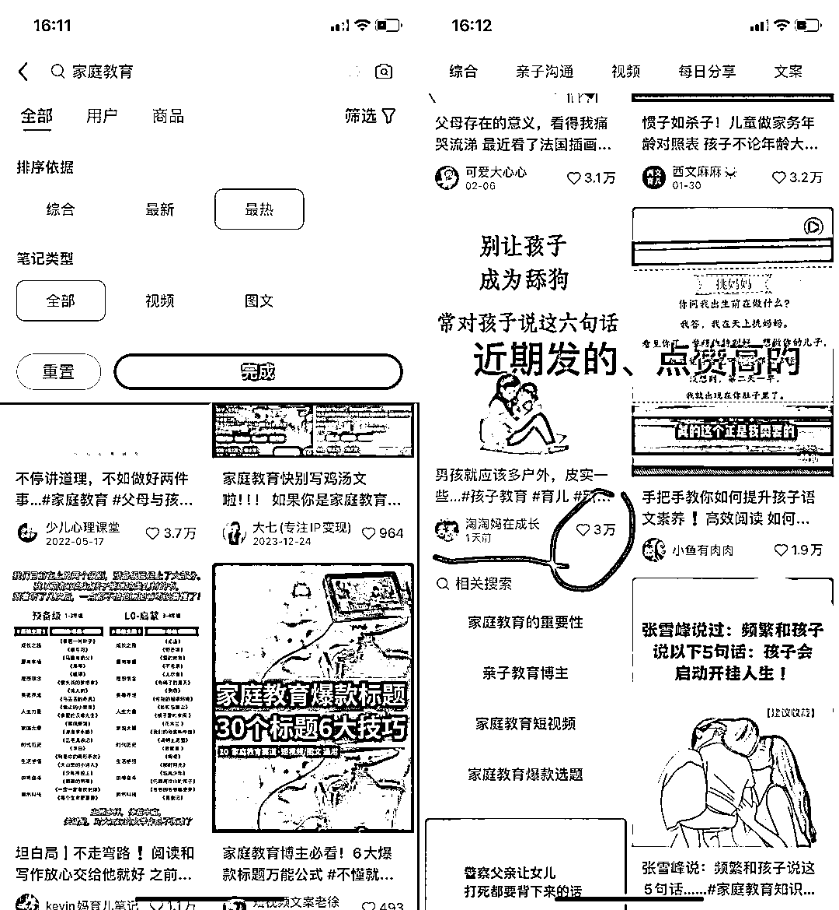
根据每个账号定位做好表格，每周每个赛道选大概5-7条合适的选题，将链接存放在表格中，我的助理会帮我把表格的链接继续进入下一环节的加工中。
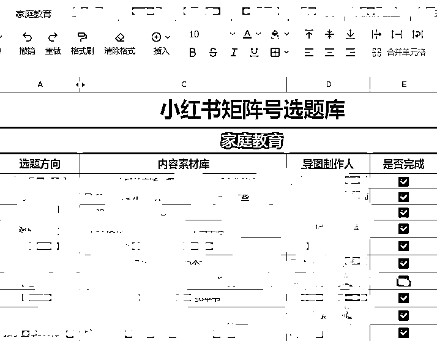
素材得益于我有一个专门的小红书素材团队，团队成员来源于我的优秀学员们，尤其是学完思维导图之后想通过思维导图赚点副业收入的优秀学员们。
他们做完图之后会发给我审核，我会给予导图提出指导建议，一边能精进技能，一边能赚点零花钱，那对我来说低成本可以得到小红书素材，所以合作的本质就是双赢。
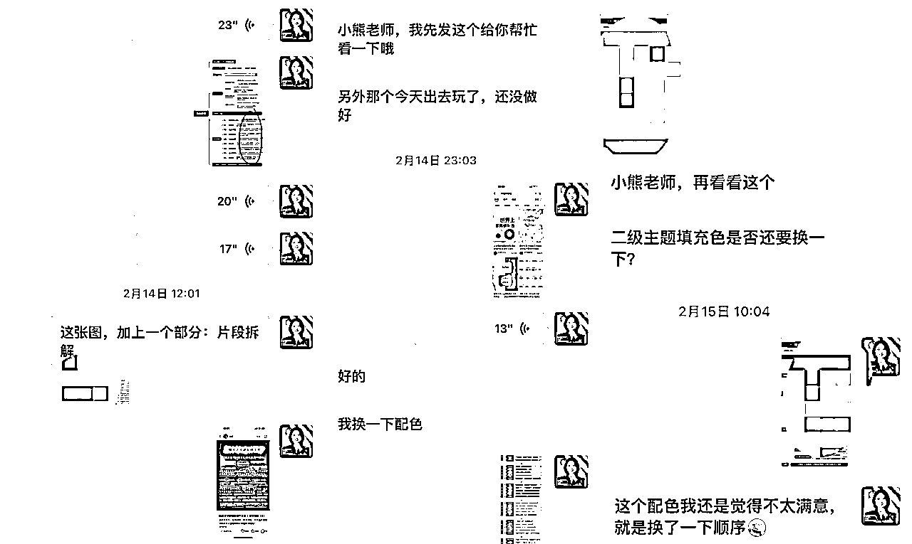
同时，我们接到一些外界的商单，我会优先给予我素材团队的小伙伴们，为图书作者制图，为有课程的老师制图等都是我们服务的范围。
此外，我还在培养制图精尖团队，他们主要承接一些海报类的商单，思维导图往创意方面深挖，可以为自媒体创业者们做课程海报，产品介绍海报等，目前这个项目已经交付了十几位不同段位的大咖。未来素材审核的工作也可以交给制图精尖团队的学员来做。
接下来这个环节就进入到小红书的运营了，根据自己跑出的经验我写了一个流程SOP，没接触过小红书运营的学员也能快速上手把账号做起来，尤其是能力强一点琢磨一阵会在我的方法之上琢磨新的点子，因为素材是现成的，每个账号主要做的事情就三个：
每个账号在运营之前会确定好这个账号的配色和文字形式，一旦确定好，就开始选择素材库里面的素材进行发布。做过小红书的伙伴都知道思维导图形式自带小红书爆款的潜质，一图读懂系列、PK系列以及极强互动的评论区这些爆款要素我们都会用在穿插在贴子里面。
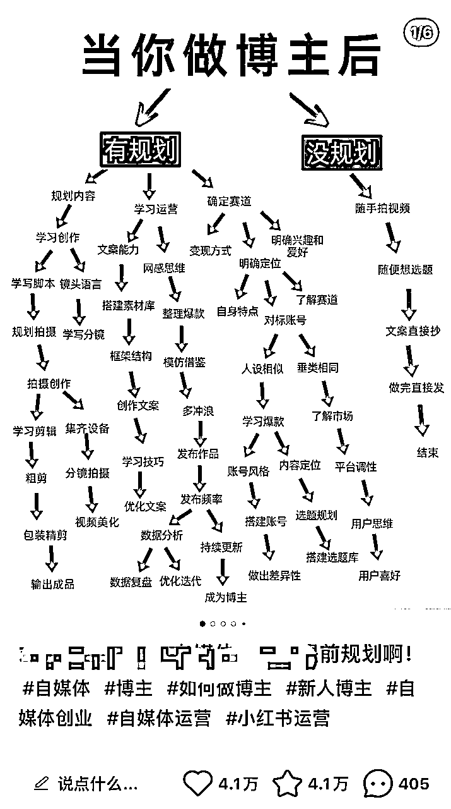
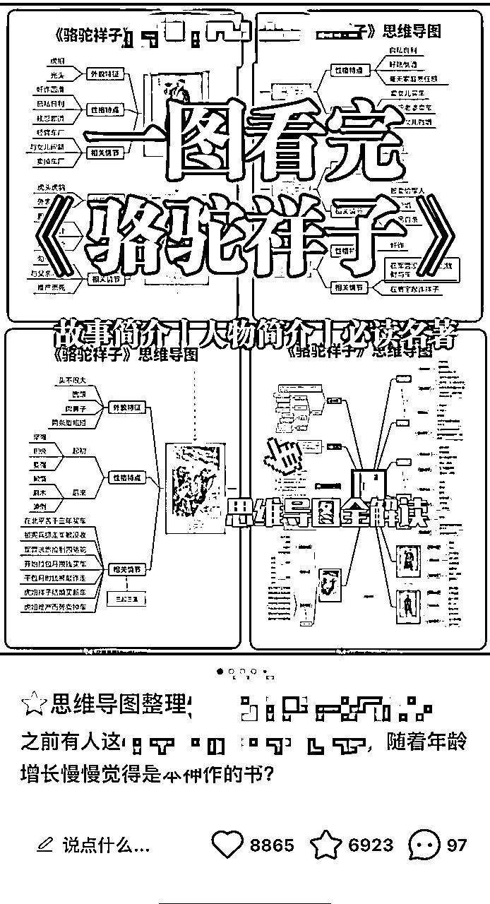
我们最常用的是PK系列，就像是减肥前后的对比一样，正确错误对比，越强烈就越有爆款的潜质。
标题撰写有很多方法，我们常用三种，因为帮我运营矩阵号的很多学员都没有什么基础，所以我们差不多固定就这三种方法撰写：
第一种方法数字式标题：用数字来突出效果的
2024年，30+岁职场女性必看的48本书！
第二种方法提问式标题：让用户看完思考下，引发思考，甚至在评论区回复你
如果是你，你会提前为XXX做准备吗？
第三种方法制造矛盾式标题：搭配PK式封面
我和小姐妹一起XXX，你们觉得谁的更好呀？
有了这三个小标题的方向指导，再结合刷对标的形式找到自己的标题，比如我们常常输入关键词找到三个爆款标题，再将三个爆款标题里面的重点关键词进行组合，换成自己的标题。
最开始我们的正文内容都是我一篇篇手动写的，后来我觉得很费时间，就有请我们的AI工具登场；https://kimi.moonshot.cn/
我用之前写好的一段内容，告诉Kimi，按照这个格式，帮我写一段内容，这篇内容的有XXXX特点，然后很快kimi就帮我们搞定了这个正文内容。
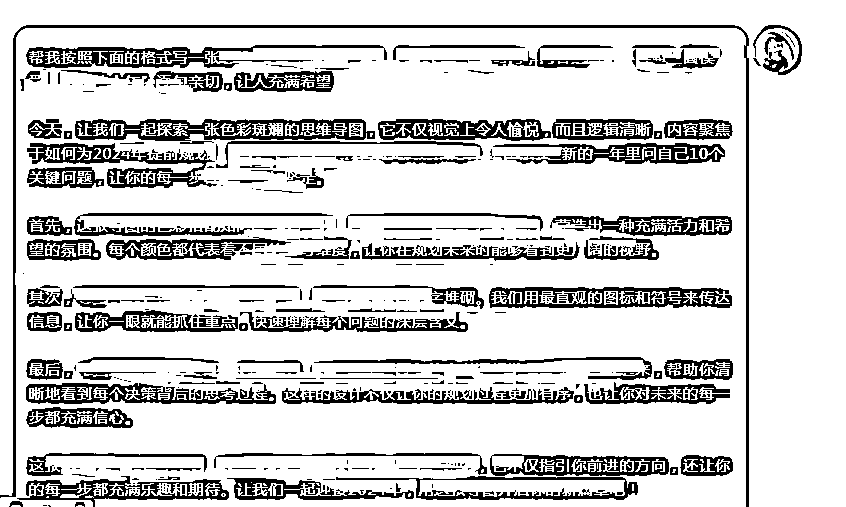
Kimi的使用极大的提升了团队小伙伴更新小红书的效率，节省我投入在矩阵账号中的时间。
引流这一环节，也是跟其他小伙伴一样，用小号在群里发微信号，送大家一些电子书、资料、导图合集相关的，就是要做好心理准备这个引流号可能随时会死掉，做好预期管理。既然要引流，就要做打不死的小强，多准备专门用来做引流的小号。
谈单这一个重头环节在我这边完成，我相信这对很多人来说都是卡点，很难跨越的坎。要么把单谈死，要么掉入对方无止境的问题陷阱中，最后一上午时间花了，单也没谈成。
就光这个过程，我请教一圈圈友，我谈单实践了几百人上千人，慢慢悟出自己的流程和调性。
忻忻帮我诊断谈单过程，教会我5句之内判断用户是否会购买。
根源教我如何温柔坚定的戳中用户的心。
靠谱教我挖掘用户需求，并给予yes肯定和靠谱建议。
理白教我时刻不要掉入别人的框架，掌握谈单的主动权。
谈单销售是一门一生都值得学习的智慧学，同样当流量大量涌进又是很费时间的工作，为了节省时间，我也优化了整个步骤：
公域粉丝鱼龙混杂，比如有人私信我，“有教程吗”，"可以教我怎么做吗”，我们一律是说“有付费课程哦”，没有付费意识的或者喜欢白嫖的，直接在源头就筛选掉，不然我还得到私域来一轮话术。
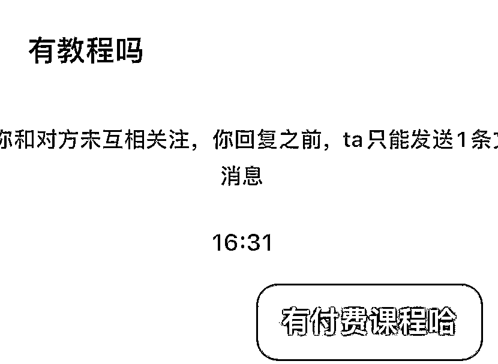
有人加我微信是想要资料，那就备注：资料领取，有的人是想要报名课程，那就备注：课程咨询。这样我们不用花时间跟对方挖掘需求，都摆在明面上直说好了，要资料的我二话不说，加到微信直接给他发资料，也不管是不是要课程，就在朋友圈养着。
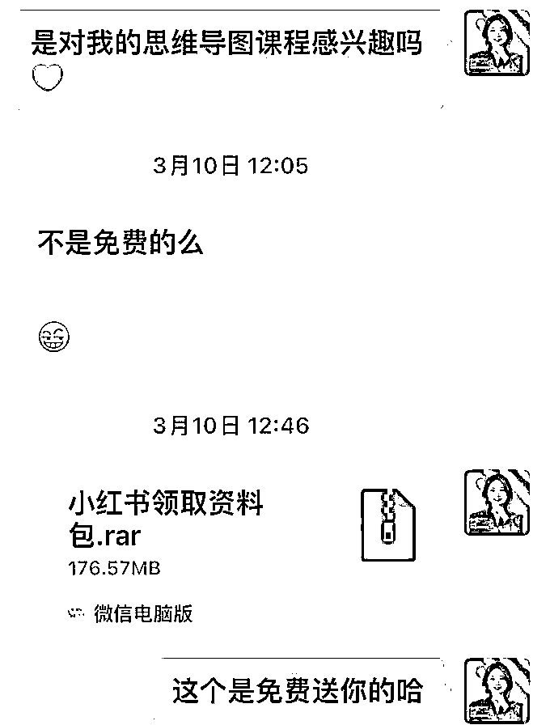
他看到导图想要课程的时候自己会来问我，或者围观朋友圈时间长了，会静默转账。
每个人加上我固定的聊天话术放在收藏里面，一句自我介绍，两张送的图，再询问是不是要买课程。
对方就回复“是“或者“嗯‘，是的话我们就进入下一轮聊天，我这有2个课程，你看下对哪个感兴趣，对方只要选择一或者二就可以。
选择好了，我继续直接就开始介绍他们选的课程内容、价格等信息，让对方看下，有疑问下一步沟通。
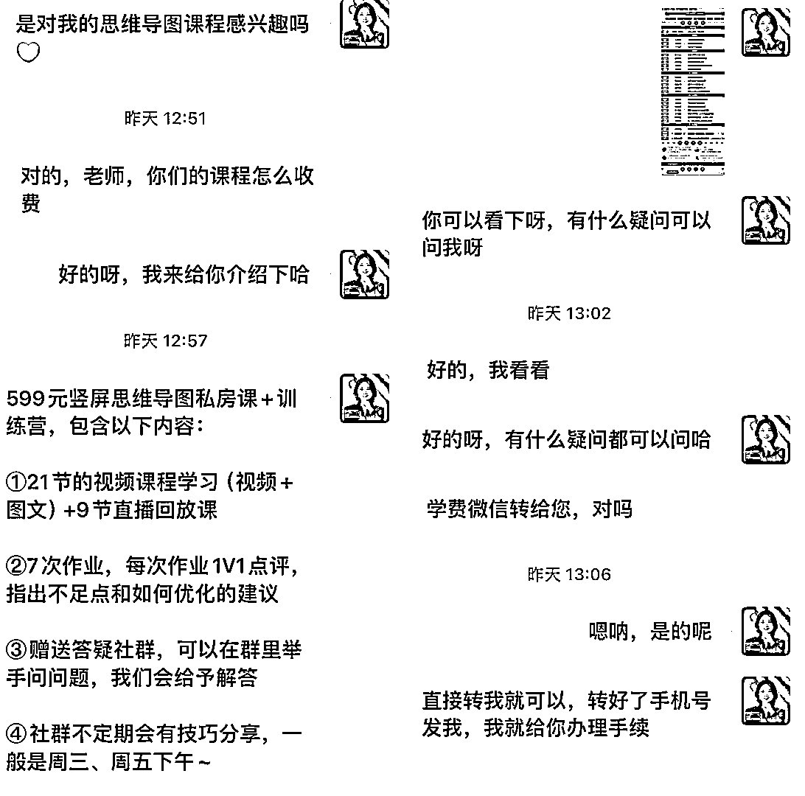
一般当下会付款的人看完我的课程介绍聊个几轮就会转账了，觉得价位不符合的人就可能没了音信，我也不会再继续追问，时间留给朋友圈，在朋友圈会N次激活唤醒。
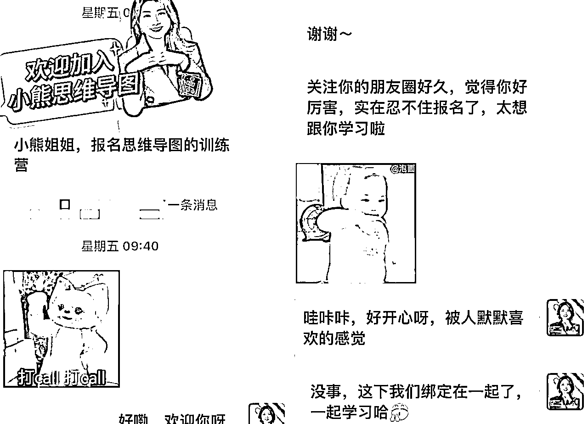
这就是给我提供稳定流量来源的小红书矩阵账号的玩法，一天平均下来10-15人，不算很多，但足够精准。再通过第一个环节的IP打造，当下没成交的伙伴会围观我一段时间后付费，我有时候也会在朋友圈做一些分销，有的小红书粉丝没买我的产品，但是会跟我买其他她需要的产品。
训练营阶段积累了几百位学员，每个都是真金白金为我付费499-899不等的，去年6月的资料整理航海，官方的运营小伙伴让我写一篇思维导图的分享稿，在跟她的交流中，我就切入“思维导图做小红书”的这个点，当时的高手分享发到星球还被亦仁加了精华，入口在这里：《如何用思维导图做小红书》 https://t.zsxq.com/17FotTJO3。
在这次分享中，我看到大家对用思维导图做自媒体越来越感兴趣，我也在去年发现自己到了一个爆发式成长的点，突然间我之前设想的模式都跑通了，商业思维也跟着提升了很多。单独给一些信任我的学员电话语音指导也能非常好的解答他们的问题，是时候推出一个更高客单的产品。
所以我在2023年的10月，我生日的那个月尝试推出了私教课以及大范围宣传我参与的一个合伙人产品，在这个阶段里，实现了收入的跃迁，10月到12月这几个月期间的训练营学员，低转高的转化率达到12.8%，平均客单达到了5位数。
转化率源于训练营的交付，客单源于私教的季卡转为终身，很多私教学员体验了季度私教卡发现打造IP这件事值得坚持一辈子，同时在这三个月内收获也很多，所以到了年底来了一波季卡结束转终身的。
那么我是如何搭建我的私教体系的呢，我愿俗称为“双腿模型”，什么叫“双腿模型”呢，一条腿我带私教学员开启做自己的IP，一条腿带他们复制现有的我，快速变现。这样不用在漫长打造IP过程中没有收入而焦虑。
我的大多数私教学员都是有想要做副业，想要和我一样打造IP的，但都是还没跑通的状态，所以私教交付主要是围绕带着学员从0到1跑通开始。
第一步，先做定位
学员报名先给他一个调查表，让他们填写自己的情况，然后根据表格填写的内容展开语音的沟通或者深度集中打字梳理，帮助学员确定一个更适合更有变现空间的定位。
第二步，制定小红书方案
前面说到我的学员几乎都是没跑通的状态，既然没跑通那我就都建议从小红书开始。结合她们的情况给学员制定全套的小红书方案。
小红书方案包含账号基础设施、账号的对标、账号的选题、账号的封面形式及做法，真正的帮助大家快速的能把小红书的体系建立起来。
这个过程是我们交付重头，我一般会分为分四个时间段完成，显示养号和做账号基础搭建、接着拆解对标账号、接着拆解爆款帖子、接着做自己的素材发布内容，完成了这四个步骤，就是根据数据反馈做一些调整。
第三步，布局私域朋友圈
先根据定位情况，把朋友圈按照我之前分享的：有情、有趣、有价值、有钱四个维度做好规划，接下来就是在日常的点滴中捕捉素材。
规划工作是不难的，难得是在朋友圈文案具体撰写中卡点，这里我分享我常用的一个结构：金句+过程故事+结尾升华主题。
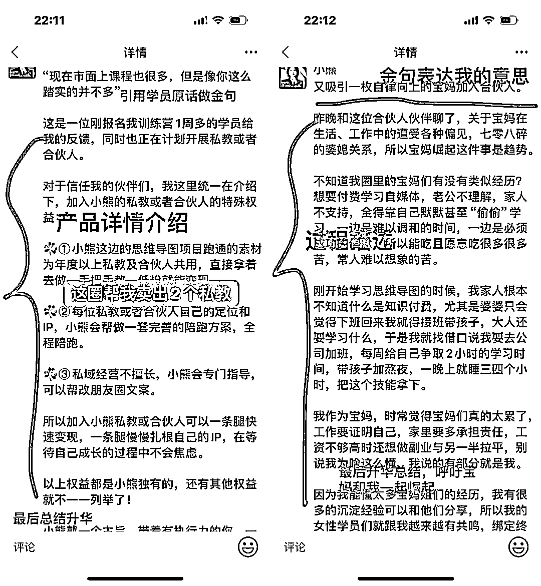
虽然，有了这个结构，但是不太会输出朋友圈的小伙伴还是会词穷，这里我会给到专属的朋友圈文案指导，这就是私教的意义。
除了上面三个步骤，还有私教学员找我来直接就是为了写课程的，我们就直接进入写课环节，帮助学员确定课程的受众人群、确定大纲和每个小节，接下来就是帮她在不同的节点审核、指导。
私教交付也是很重，所以我不会随意接受报名，近期就拒绝了两个，找到同频的，有执行力，能拿结果的比什么都强。于我而言，打造IP是一辈子的事情，扎扎实实做好各个环节的口碑。
一条腿快速变现，这个就是直接把我小红书矩阵运营的全过程交给私教学员们，把我的素材也给到他们去发，凡是私教学员成交的学员，我们55分。
私教学员一边在打造自己的IP，一边在真正的体验市场中的交易，能够帮助他们更快的理解每个平台背后的逻辑。因为说实话，很多时候我们没有亲手打造出一个爆款，不一定能深刻体会到爆款背后的意义。
这就是我在私教中的“双腿模型”，一边快速跑出自己的，一边快速靠近变现，在成长，也在赚钱，在无数的不确定性中给予足够的确定性。
我在跑通IP闭环之前，已经在一个比较厉害百万商业公众号上发布了十几篇代表性作品，同时也收到了Xmind官方的达人邀约，作品和头像都放在官网上，给自己积攒了一些背书和人脉。
所以会链接到一些出版社资源，我会帮他们推广图书，参与打榜，他们会给我的学员们送书，不断地带着团队共创产出优秀的作品。
慢慢地，还链接到一些自媒体创业者，需要制作引流素材、业务海报、个人介绍海报、发售海报，我都能帮助低成本的解决。
那么接到这些合作的过程中，我总结了几点经验：
图书的作者和B端可能让我们一些小个体会觉得有距离或者不够自信去链接，我之前会产生类似的想法。但事实是这样嘛，大佬们都是很有亲和力的，只有我们不断向上链接才能升级自我呀。
同时，大佬们也有过我们这样的阶段，他们不会拒绝一个礼貌且有热情的好友。
就像我当时链接亦仁老师，我也很紧张忐忑，亦仁老师会不会不通过我，没想到我们一加上，亦仁老师记得我有思维导图的标签，给我很大的动力继续链接。
包括这一次航海家见面会，全场的小伙伴们都去加了咱们氪金爸爸Max，我也很有幸加上了，还和Max聊了如何帮他的业务梳理流程。很顺利，我们在结束线下见面会当天就达成一次尝试合作帮金主爸爸Max梳理直播内容。
当出版社来找我帮忙推广书籍，我每次都毫不犹豫且不遗余力的帮他们去做，一次合作、两次合作，三次合作，出版社对接人也看到了我的负责和耐心。在去年端午节送了我学员们100多本书，还给我转了666元红包作为端午节礼物。
再到今年1月，出版社说有一本新书要定稿印刷，想要在封面上写我的名字作为推荐人，我想这么好的事，他们为啥会记得我呢，这个努力执行的过程一定少不了。
笔记侠创始人柯洲出新书之前，邀请我写一篇我的文章放在他的书里面，我二话不说打磨稿子，修改一遍两遍，后来过稿，我写的文章顺利刊载了书上，很多学员，因为看到这篇文章，再刷到我的导图，果断找我学习。
后来，新书上市，他们邀请我拍视频推荐，我想要更好的效果和展示，一个人在房间拍到了晚上1点钟，直到满意为止，成为第一个提交视频上去的人。
当哪里需要我的时候，我从来不会拧巴，在要不要去干，我一般选择去干，选择了我一般就会尽全力干好，这是态度，也是他人信任的基础。
咱们生财大佬许义老师，新书出版第一个想到要我来帮他的新书做知识地图并打印出来。
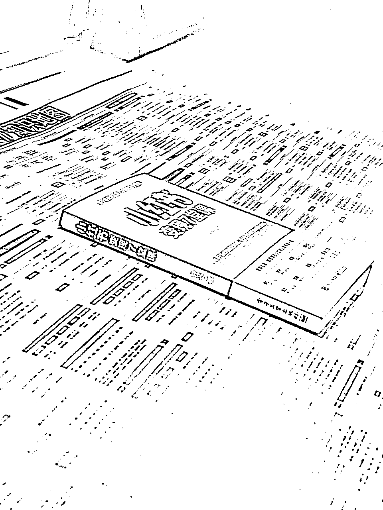
我第一时间知道许老师新书出来，立马在我的群里给学员们分享、并带着参与制图的学员一起下单打榜发朋友圈。在后续的给他人送礼物过程，我也会默默的买许老师的新书送给别人。
我还遇到一位贵人，她把我推荐给知乎盐选，带我一起把课程上架在知乎，我一直记得这些引荐和帮助。
当这位老师需要帮助的时候，我在元旦节日、正月初一初二收到她发来的制图请求，我二话不说调动团队伙伴帮这位老师制图，按照要求给到贵人。
我想，人生这么有幸遇见贵人，有朝一日，贵人需要我的帮助，我必不遗余力。
以上，是我从月入1万进化到月入10万的过程，距离2022年的那篇龙珠精华文章一年多的时间，我在结果上得到了10倍增长，其实更是一个不断升级自我，甚至是脱胎换骨的过程。我经历过N次的崩溃重启，自我治愈，因为我始终相信，你的人生可以拿什么结果只有你自己说了算，就算你是女性，你是宝妈又怎么样。
航海家见面会的夜话上，我参加了有尔组织的女性创业局，有尔问我们，你们在创业的路上有听到一些不好的声音嘛？我第一个举手发言，我说我听到了，太多太多。不过，尽力跑吧，这样不好的声音就进不了耳朵了~
所以，实现这个10倍的增长，对我来说一点也不简单，我花了很多时间、心思，相较于很多做项目的大佬10万真的很少，而且我也知道还有很多不够完善的地方，参加完这次航海家见面会我的完善改进有了方向。
最后借用粥左罗老师的一句话：
“一个人找到了一件自己擅长的事，就应该竭尽所能，把这件事能做到最好，永不停歇。"
于我而言，思维导图就是！
所以，生财的伙伴们我们都一起去实战，去行动，在一次次行动中变成更强大的自己。
我们一起生财有术！